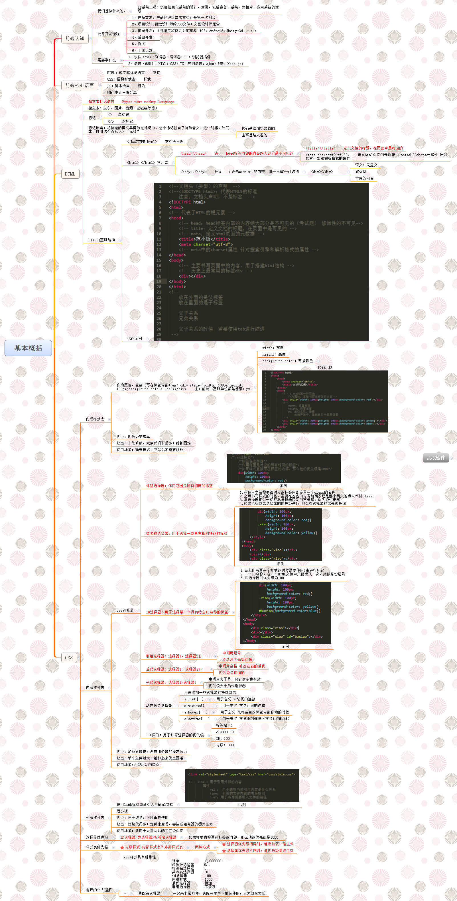
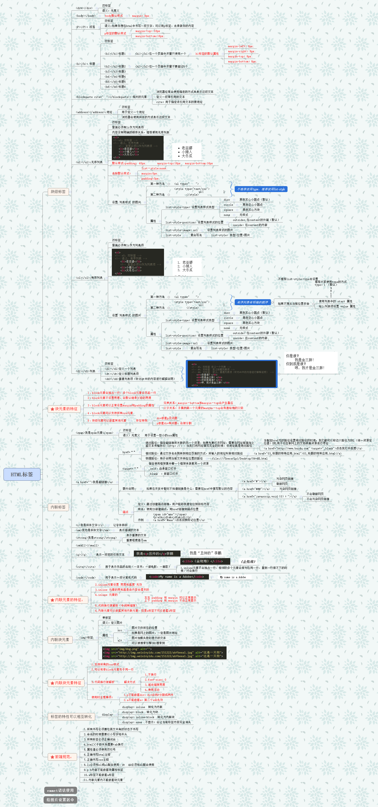
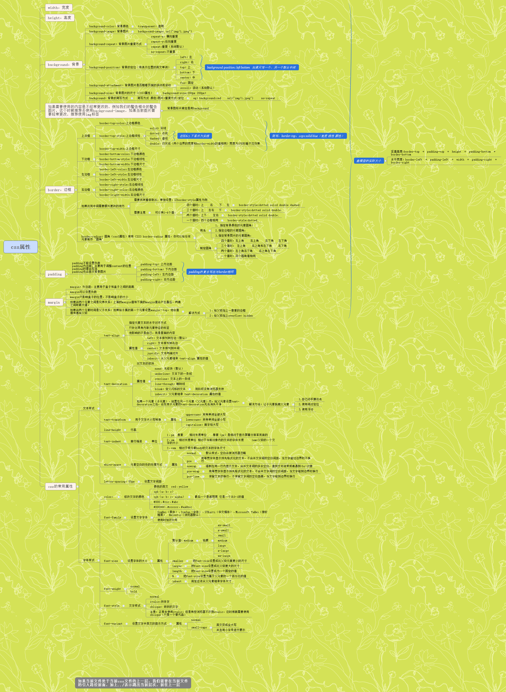
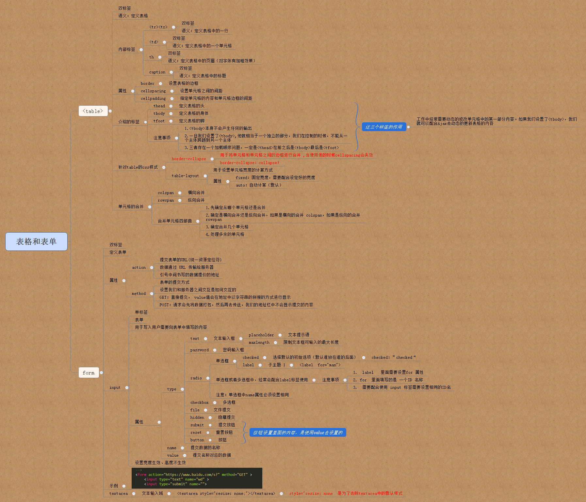
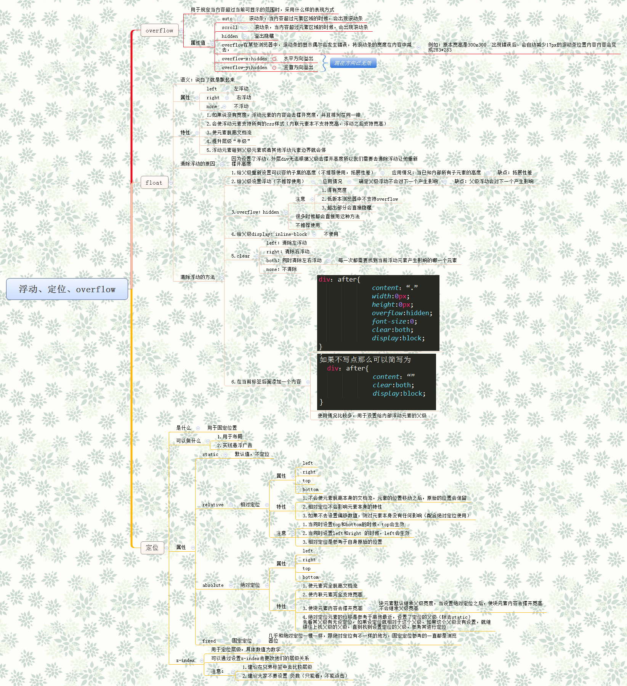
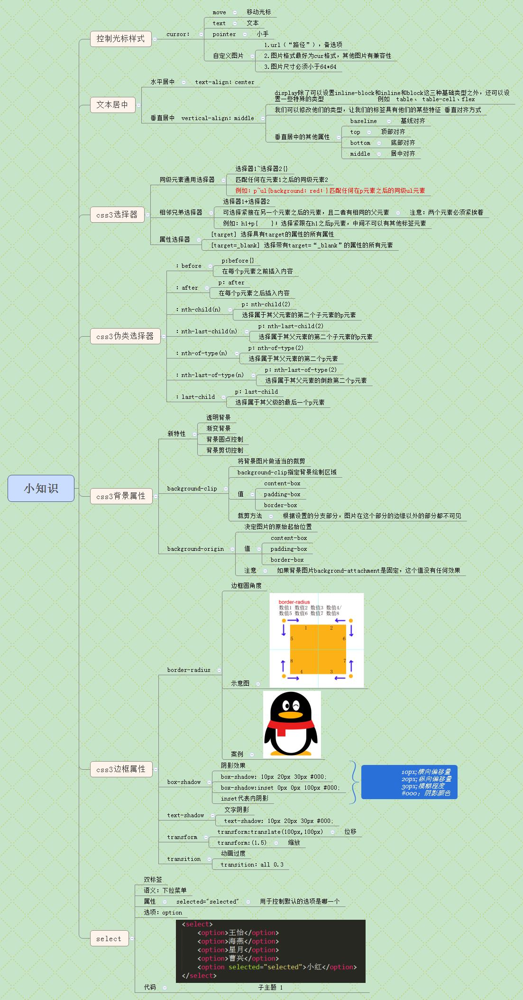
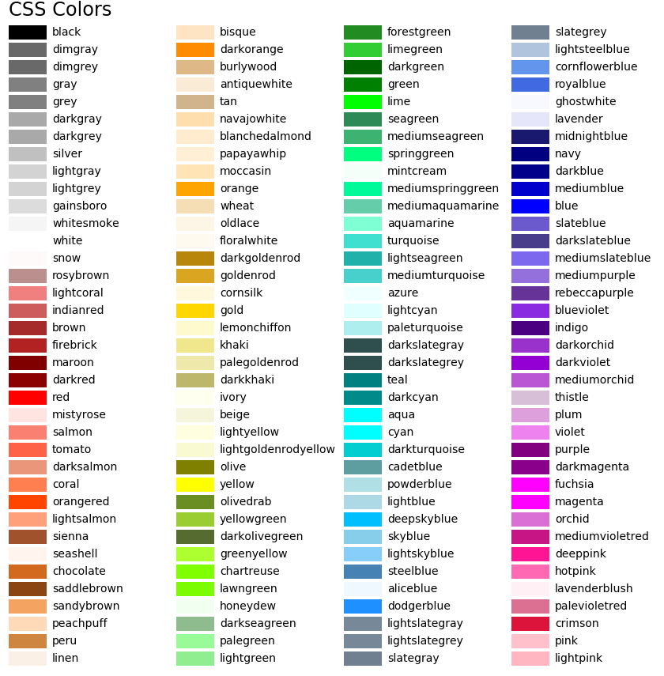
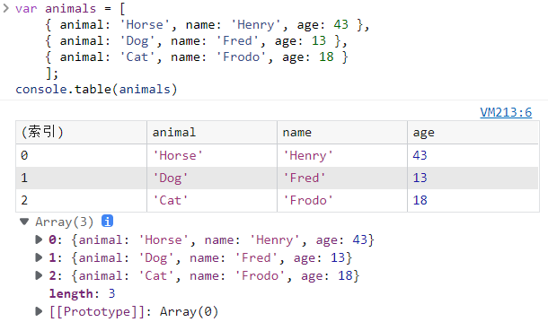

Think in WEB
§0 HTML、CSS基础参考：
-
- 基本概念 
-
- 常用HTML标签 
-
- 常用CSS属性 
-
- 表格和表单 
-
- 浮动和定位 
-
- CSS3 
§1 HTTP status code
| 状态码 | 状态码英文名称 | 中文描述 |
|---|---|---|
| 100 | Continue | 继续。客户端应继续其请求 |
| 101 | Switching Protocols | 切换协议。服务器根据客户端的请求切换协议。只能切换到更高级的协议，例如，切换到HTTP的新版本协议 |
| 200 | OK | 请求成功。一般用于GET与POST请求 |
| 201 | Created | 已创建。成功请求并创建了新的资源 |
| 202 | Accepted | 已接受。已经接受请求，但未处理完成 |
| 203 | Non-Authoritative Information | 非授权信息。请求成功。但返回的meta信息不在原始的服务器，而是一个副本 |
| 204 | No Content | 无内容。服务器成功处理，但未返回内容。在未更新网页的情况下，可确保浏览器继续显示当前文档 |
| 205 | Reset Content | 重置内容。服务器处理成功，用户终端（例如：浏览器）应重置文档视图。可通过此返回码清除浏览器的表单域 |
| 206 | Partial Content | 部分内容。服务器成功处理了部分GET请求 |
| 300 | Multiple Choices | 多种选择。请求的资源可包括多个位置，相应可返回一个资源特征与地址的列表用于用户终端（例如：浏览器）选择 |
| 301 | Moved Permanently | 永久移动。请求的资源已被永久的移动到新URI，返回信息会包括新的URI，浏览器会自动定向到新URI。今后任何新的请求都应使用新的URI代替 |
| 302 | Found | 临时移动。与301类似。但资源只是临时被移动。客户端应继续使用原有URI |
| 303 | See Other | 查看其它地址。与301类似。使用GET和POST请求查看 |
| 304 | Not Modified | 未修改。所请求的资源未修改，服务器返回此状态码时，不会返回任何资源。客户端通常会缓存访问过的资源，通过提供一个头信息指出客户端希望只返回在指定日期之后修改的资源 |
| 305 | Use Proxy | 使用代理。所请求的资源必须通过代理访问 |
| 306 | Unused | 已经被废弃的HTTP状态码 |
| 307 | Temporary Redirect | 临时重定向。与302类似。使用GET请求重定向 |
| 400 | Bad Request | 客户端请求的语法错误，服务器无法理解 |
| 401 | Unauthorized | 请求要求用户的身份认证 |
| 402 | Payment Required | 保留，将来使用 |
| 403 | Forbidden | 服务器理解请求客户端的请求，但是拒绝执行此请求 |
| 404 | Not Found | 服务器无法根据客户端的请求找到资源（网页）。通过此代码，网站设计人员可设置"您所请求的资源无法找到"的个性页面 |
| 405 | Method Not Allowed | 客户端请求中的方法被禁止 |
| 406 | Not Acceptable | 服务器无法根据客户端请求的内容特性完成请求 |
| 407 | Proxy Authentication Required | 请求要求代理的身份认证，与401类似，但请求者应当使用代理进行授权 |
| 408 | Request Time-out | 服务器等待客户端发送的请求时间过长，超时 |
| 409 | Conflict | 服务器完成客户端的PUT请求是可能返回此代码，服务器处理请求时发生了冲突 |
| 410 | Gone | 客户端请求的资源已经不存在。410不同于404，如果资源以前有现在被永久删除了可使用410代码，网站设计人员可通过301代码指定资源的新位置 |
| 411 | Length Required | 服务器无法处理客户端发送的不带Content-Length的请求信息 |
| 412 | Precondition Failed | 客户端请求信息的先决条件错误 |
| 413 | Request Entity Too Large | 由于请求的实体过大，服务器无法处理，因此拒绝请求。为防止客户端的连续请求，服务器可能会关闭连接。如果只是服务器暂时无法处理，则会包含一个Retry-After的响应信息 |
| 414 | Request-URI Too Large | 请求的URI过长（URI通常为网址），服务器无法处理 |
| 415 | Unsupported Media Type | 服务器无法处理请求附带的媒体格式 |
| 416 | Requested range not satisfiable | 客户端请求的范围无效 |
| 417 | Expectation Failed | 服务器无法满足Expect的请求头信息 |
| 500 | Internal Server Error | 服务器内部错误，无法完成请求 |
| 501 | Not Implemented | 服务器不支持请求的功能，无法完成请求 |
| 502 | Bad Gateway | 充当网关或代理的服务器，从远端服务器接收到了一个无效的请求 |
| 503 | Service Unavailable | 由于超载或系统维护，服务器暂时的无法处理客户端的请求。延时的长度可包含在服务器的Retry-After头信息中 |
| 504 | Gateway Time-out | 充当网关或代理的服务器，未及时从远端服务器获取请求 |
| 505 | HTTP Version not supported | 服务器不支持请求的HTTP协议的版本，无法完成处理 |
§2 CSS Colors
CSS 的颜色写法有color keywords|RGB|HSL - CSS color_value | MDN (mozilla.org) ：
·RGB语法
/* 这些语法都表示同一个颜色：a fully opaque hot pink */
/* 十六进制语法 */
#f09
#F09
#ff0099
#FF0099
/* 函数语法 */
rgb(255,0,153)
rgb(255, 0, 153)
rgb(255, 0, 153.0)
rgb(100%,0%,60%)
rgb(100%, 0%, 60%)
rgb(100%, 0, 60%) /* 错误：不要混用数字和百分比 */
rgb(255 0 153)
/* 带有alpha值的十六进制语法 */
#f09f
#F09F
#ff0099ff
#FF0099FF
/* 带有alpha值的函数语法 */
rgb(255, 0, 153, 1)
rgb(255, 0, 153, 100%)
/* 空格语法 */
rgb(255 0 153 / 1)
rgb(255 0 153 / 100%)
/* 带有浮点值的函数语法 */
rgb(255, 0, 153.6, 1)
rgb(1e2, .5e1, .5e0, +.25e2%)
·CSS颜色名：

§3. HTML 特殊符号(also for MARKDOWN)
| 符号 | 说明 | 对应编码(使用时去掉空格) | 英文 |
|---|---|---|---|
| & | AND 符号 | & amp; | ampersand |
| < | 小于 | & lt; | little |
| > | 大于 | & gt; | great |
| 空格 | & nbsp; | number space | |
| ¿ | 倒问号 | & iquest; | inverted question |
| ? | 问号 | & quest; | question |
| « | 左书名号 | & laquo; | left angle quote |
| » | 右书名号 | & raquo; | right angle quote |
| " | 引号 | & quot; | quote |
| ‘ | 左单引号 | & lsquo; | left single quote |
| ’ | 右单引号 | & rsquo: | right single quote |
| “ | 左双引号 | & ldquo: | left double quote |
| ” | 右双引号 | & rdquo: | right double quote |
| ¶ | 段落符号 | & para; | paragraph |
| § | 章节符 | & sect; | section |
| × | 乘号 | & times; | times |
| ÷ | 除号 | & divide; | divide |
| ± | 加减号 | & plusmn; | plus minus |
| ƒ | function | & fnof; | 还没查到 |
| √ | 根号 | & radic; | radic |
| ∞ | 无穷大 | & infin; | infinite |
| ° | 度 | & deg; | degree |
| ≠ | 不等号 | & ne; | ne |
| ≡ | 恒等于 | & equiv; | equivalent |
| ≤ | 小于等于 | & le; | less than or equal to |
| ≥ | 大于等于 | & ge; | great than or equal to |
| ⊥ | 垂直符号 | & perp; | perpendicular |
| ← | 左箭头 | & larr; | left arrow |
| → | 右箭头 | & rarr; | right arrow |
| ↑ | 上箭头 | & uarr; | up arrow |
| ↓ | 下箭头 | & darr; | down arrow |
| ↔ | 水平箭头 | & harr; | horizontal arrow |
| ↕ | 竖直箭头 | & varr; | vertical arrow |
| ⇐ | 双线左箭头 | & lArr; | left arrow |
| ⇒ | 双线右箭头 | & rArr; | right arrow |
| ⇑ | 双线上箭头 | & uArr; | up arrow |
| ⇓ | 双线上箭头 | & dArr; | down arrow |
| ⇔ | 双线水平双箭头 | & hArr; | horizontal arrow |
| ⇕ | 双线竖直箭头 | & vArr; | vertical arrow |
| ♠ | 黑桃 | & spades; | spades |
| ♥ | 红桃 | & hearts; | hearts |
| ♣ | 梅花 | & clubs; | club |
| ♦ | 方块 | & diams; | diamonds |
| © | 版权 | & copy; | copy right |
| ® | 注册商标 | & reg; | registration |
| ™ | 商标 | & trade; | trade |
| ¥ | 人民币 | & yen; | |
| € | 欧元 | & euro; | euro |
| ¢ | 美分 | & cent; | cent |
| £ | 英磅 | & pound; | pound |
| ⊕ | & oplus; | ||
| ½ | 二分之一 | & frac12; | fraction |
| ¼ | 四分之一 | & frac14; | fraction |
| ‰ | 千分符号 | & permil; | per mille |
| ∴ | 所以 | & there4; | there fore |
| π | 圆周率 | & pi; | |
| ¹ | 商标1 | & sup1; | super 1 |
| α | alpha | & alpha; | alpha |
| β | beta | & beta; | beta |
| γ | gamma | & gamma; | gamma |
| δ | delta | & delta; | delta |
| θ | theta | & theta; | theta |
| λ | lambda | & lambda; | lambda |
| σ | sigma | & sigma; | sigma |
| τ | tau | & tau; | tau |
UNICODE二进制符号显示：HTML Unicode UTF-8 (w3schools.com)
eg:☀~⛿
☀ : ☀☁ : ☁☂ : ☂ ;☐ : ☐☑ : ☑☒ : ☒☓ : ☓♀ : ♀♁ : ♁♂ : ♂ ⚙ : ⚙
❮❯ ❮❯
§4.CSS shortcut
-
color
~~`#000000`~~ : `#000`
~~`#336699`~~ : `#369`
-
Margin/Padding 简写方式有三种
Margin-top: 2px;
Margin-right: 5px;
Margin-bottom: 2em;
Margin-left: 15px;
Margin: 2px 5px 2em 15px;// [top-right-bot-left]
Padding:2px 5px 2em 15px; // top-right-bot-left
padding:10px 5px; // top&bot left&right
padding:10px 5px 15px; // // top left&right BOT
padding:10px; // left&right&top&bot
-
border
Border-width: 1px;
Border-style: solid;
Border-color: #000
border: 1px solid #000
-
font
Font-style: italic;
Font-variant: small-caps;
Font-weight: bold;
Font-size: 1em;
Line-height: 140%;
Font-family: sans-serif;
font: italic small-caps bold 1em 140% sans-serieffont: bold 15px/80% 'Microsoft Yahei';
windows下一些常用的font-family：
- 宋体（SimSun）：Win下大部分游览器的默认字体，
宋体在小字号下（如12px、14px）的显示效果还可以接受，但是字号一大就非常糟糕了，所以使用的时候要注意。 - 微软雅黑（“Microsoft Yahei”）：从 Vista 开始，微软提供了这款新的字体，一款无衬线的黑体类字体，并且拥有 Regular、Bold 两种粗细的字重，显著提高了字体的显示效果。现在这款字体已经成为Windows游览器中最值得使用的中文字体。从Win8开始，
微软雅黑又加入了 Light 这款更细的字重，对于喜欢细字体的设计、开发人员又多了一个新的选择。 - Arial：Win平台上默认的无衬线西文字体（为什么要说英文字体后面会解释），有多种变体，显示效果一般。
- Tahoma：十分常见的无衬线字体，被采用为Windows 2000、Windows XP、Windows Server 2003及Sega游戏主机Dreamcast等系统的预设字型，显示效果比
Arial要好。 - Verdana：无衬线字体，优点在于它在小字上仍结构清晰端整、阅读辨识容易。
- 其他：Windows 下默认字体列表：微软官网、维基百科、Office字体
- 结论：微软雅黑为Win平台上最值得选择的中文字体，但非游览器默认，需要设置；西文字体的选择以Arial、Tahoma等无衬线字体为主。
font-family: "Helvetica Neue", Helvetica, Arial, "PingFang SC", "Hiragino Sans GB", "Heiti SC", "Microsoft YaHei", "WenQuanYi Micro Hei", sans-serif;
- Background
Background-color: #f00;
Background-image: url(background.gif);
Background-repeat: no-repeat;
Background-attachment: fixed;
Background-position: 0 0;
background: #f00 url(background.gif) no-repeat fixed 0 0
- List-style
list-style-type: square;
list-style-position: inside;
List-style-image: url(image.gif)
list-style: square inside url(image.gif)
§5.CSS selector
5.1 基本选择器
| 序号 | 选择器 | 含义 |
|---|---|---|
| 1. | * | 通用元素选择器，匹配任何元素 |
| 2. | E | 标签选择器，匹配所有使用E标签的元素 |
| 3. | .info | class选择器，匹配所有class属性中包含info的元素 |
| 4. | #footer | id选择器，匹配所有id属性等于footer的元素 |
* { margin:0; padding:0; }
p { font-size:2em; }
.info { background:#ff0; }
p.info { background:#ff0; }
p.info.error { color:#900; font-weight:bold; }
#info { background:#ff0; }
p#info { background:#ff0; }
~选择器优先级 优先级 - CSS：层叠样式表 | MDN (mozilla.org)
-
!important>内联样式style="font-weight:bold",建议不要使用!important -
ID 选择器（例如，
#example）。 -
类选择器（例如，
.example），属性选择器（例如，[type="radio"]）和伪类（例如，:hover） -
类型选择器（例如，
h1）和伪元素（例如，::before）如下面的示例，
.cc优先级比div p要高，所以显示blue：但是如果使用#aa p则是ID选择器，会覆盖类选择器.cc，那么会显示红色。<div id="aa"> <p class="cc">TEST</p> </div> <style> .cc{ color:blue; } div p { color:red; } </style>
5.2 多元素的组合选择器
| 序号 | 选择器 | 含义 |
|---|---|---|
| 5. | E,F | 多元素选择器，同时匹配所有E元素或F元素，E和F之间用逗号分隔 |
| 6. | E F | 后代元素选择器，匹配所有属于E元素后代的F元素，E和F之间用空格分隔 |
| 7. | E > F | 子元素选择器，匹配所有E元素的子元素F |
| 8. | E + F | 毗邻元素选择器，匹配所有紧随E元素之后的同级元素F |
div p { color:#f00; }
#nav li { display:inline; }
#nav a { font-weight:bold; }
div > strong { color:#f00; }
p + p { color:#f00; }
5.3 属性选择器
| 序号 | 选择器 | 含义 |
|---|---|---|
| 9. | E[att] | 匹配所有具有att属性的E元素，不考虑它的值。（注意：E在此处可以省略，比如"[cheacked]"。以下同。） |
| 10. | E[att=val] | 匹配所有att属性等于"val"的E元素 |
| 11. | E[att~=val] | 匹配所有att属性具有多个空格分隔的值、其中一个值等于"val"的E元素 |
| 12. | E[att|=val] | 匹配所有att属性具有多个连字号分隔（hyphen-separated）的值、其中一个值以"val"开头的E元素,主要用于lang属性，比如"en"、“en-us”、“en-gb"等 |
p[title] { color:#f00; }
div[class=error] { color:#f00; }
td[headers~=col1] { color:#f00; }
p[lang|=en] { color:#f00; }
blockquote[class=quote][cite] { color:#f00; }
5.4 伪类&伪元素
| 序号 | 选择器 | 含义 |
|---|---|---|
| 13. | E:first-child | 匹配父元素的第一个子元素 |
| 14. | E:link | 匹配所有未被点击的链接 |
| 15. | E:visited | 匹配所有已被点击的链接 |
| 16. | E:active | 匹配鼠标已经其上按下、还没有释放的E元素 |
| 17. | E:hover | 匹配鼠标悬停其上的E元素 |
| 18. | E:focus | 匹配获得当前焦点的E元素 |
| 19. | E:lang(c) | 匹配lang属性等于c的E元素 |
| - | - | - |
| 20. | E:first-line | 匹配E元素的第一行 |
| 21. | E:first-letter | 匹配E元素的第一个字母 |
| 22. | E:before | 在E元素之前插入生成的内容 |
| 23. | E:after | 在E元素之后插入生成的内容 |
p:first-child { font-style:italic; }
input[type=text]:focus { color:#000; background:#ffe; }
input[type=text]:focus:hover { background:#fff; }
q:lang(sv) { quotes: "\201D" "\201D" "\2019" "\2019"; }
/*-伪元素-*/
p:first-line { font-weight:bold; color;#600; }
.preamble:first-letter { font-size:1.5em; font-weight:bold; }
.cbb:before { content:""; display:block; height:17px; width:18px; background:url(top.png) no-repeat 0 0; margin:0 0 0 -18px; }
a:link:after { content: " (" attr(href) ") "; }
5.5 CSS3 选择器
| 序号 | 选择器 | 含义 |
|---|---|---|
| 24. | E ~ F | 匹配任何在E元素之后的同级F元素 |
| 25. | E[att^=“val”] | 属性att的值以"val"开头的元素 |
| 26. | E[att$=“val”] | 属性att的值以"val"结尾的元素 |
| 27. | E[att*=“val”] | 属性att的值包含"val"字符串的元素 |
| 28. | E:enabled | 匹配表单中激活的元素 |
| 29. | E:disabled | 匹配表单中禁用的元素 |
| 30. | E:checked | 匹配表单中被选中的radio（单选框）或checkbox（复选框）元素 |
| 31. | E::selection | 匹配用户当前选中的元素 |
| 32. | E:root | 匹配文档的根元素，对于HTML文档，就是HTML元素 |
| 33. | E:nth-child(n) | 匹配其父元素的第n个子元素，第一个编号为1 |
| 34. | E:nth-last-child(n) | 匹配其父元素的倒数第n个子元素，第一个编号为1 |
| 35. | E:nth-of-type(n) | 与:nth-child()作用类似，但是仅匹配使用同种标签的元素 |
| 36. | E:nth-last-of-type(n) | 与:nth-last-child() 作用类似，但是仅匹配使用同种标签的元素 |
| 37. | E:last-child | 匹配父元素的最后一个子元素，等同于:nth-last-child(1) |
| 38. | E:first-of-type | 匹配父元素下使用同种标签的第一个子元素，等同于:nth-of-type(1) |
| 39. | E:last-of-type | 匹配父元素下使用同种标签的最后一个子元素，等同于:nth-last-of-type(1) |
| 40. | E:only-child | 匹配父元素下仅有的一个子元素，等同于:first-child:last-child或 :nth-child(1):nth-last-child(1) |
| 41. | E:only-of-type | 匹配父元素下使用同种标签的唯一一个子元素，等同于:first-of-type:last-of-type或 :nth-of-type(1):nth-last-of-type(1) |
| 42. | E:empty | 匹配一个不包含任何子元素的元素，注意，文本节点也被看作子元素 |
| 43. | E:not(s) | 匹配不符合当前选择器的任何元素 |
| 44. | E:target | 匹配文档中特定"id"点击后的效果 |
§6. JS
JSON&OBJ
graph TB
JS_OBJ[JavaScript对象2]-- 序列化:JSON.stringify -->JSON[JSON]
JSON[JSON]-- 反序列化:JSON.parse -->JS_OBJ[JavaScript对象]
JQuery set css style.
$(document).ready(function(){
document.getElementById('elm_id').style.fontSize = '12px'; // modify style
/* recommand use querySelector:
document.querySelector('#elm_id')\document.querySelector('.cls_id') ,
support complex css selector like :
var el = elem.querySelector("div.user-panel.main input[name='login']");
var els = elem.querySelectorAll('div')*/
$ = jQuery.noConflict();
jQuery("#id").css("color", chk.checked ? "black" : "gray");
# OR： document.querySelector('#id').style.color = "black"
jQuery("#id").css("color", chk.checked ? "black" : "gray");
jQuery("#id").prop("disabled", true);
jQuery("#id").attr("label", true);
var checked = jQuery("#id").prop('checked');
$("#info_area").css("padding-top", '20px'); // set padding
//显示隐藏id:none->inline-block
jQuery("#id").css("display", 'inline-block');
// document.getElementById('id').style.display='[none/inline/block/inline-block]'
// or: .style.visibility = 'hidden|visible'
// gray all button-
for (var elem of document.getElementsByClassName("mango_button")){
elem.style.backgroundColor = "gray";
}
//attr vs prop:具有 true 和 false 两个属性的属性，
// 如 checked, selected 或者 disabled 使用prop();
//其他的使用 attr()-HTML attribute
// trigger event.
$('#_selecter').val(5).trigger('change');
// each
$(".infoTitle[title]").each(function( index,data){ console.log(data.innerHTML)} )
});
function GetBirthDay(str='1985-11-17'){
var r= /^(\d{4})-(\d{1,2})-(\d{1,2})$/; //正则表达式 匹配出生日期(简单匹配)
r.exec(str);
s1=RegExp.$1;
s2=RegExp.$2;
s3=RegExp.$3;
console.log(s1+" "+s2+" "+s3)//结果为1985 10 15
}
/* Get search param url?key=val..*/
function GetVars(str)
{
url=location.search.substring(1);
var parameterList=url.split("&");
for (var i=0;i<parameterList.length;i++)
{
parameter=parameterList[i].split("=");
if (parameter[0] == str)
return (decodeURIComponent(parameter[1]));
}
}
jQuery .attr VS .prop
| Attribute/Property | attr | prop |
|---|---|---|
| accesskey | √ | |
| align | √ | |
| async | √ | |
| autofocus | √ | |
| checked | √ | |
| class | √ | |
| contenteditable | √ | |
| defaultValue | √ | |
| draggable | √ | |
| href | √ | |
| id | √ | |
| label | √ | |
| location(ie.window.location) | √ | |
| multiple | √ | |
| nodeName | √ | |
| nodeType | √ | |
| readonly | √ | |
| rel | √ | |
| selected | √ | |
| selectedIndex | √ | |
| src | √ | |
| tabindex | √ | |
| tagName | √ | |
| title | √ | |
| type | √ | |
| width | √ |
§7.JS Debug!important
7.1. debugger;
function test(){
if (thisThing) {
debugger;
}
}
调试模式使用debug(test),附加函数断点
7.2. $0
$0,$1分别对应浏览器查看元素时的选中元素
7.3. console.table(obj)
var animals = [
{ animal: 'Horse', name: 'Henry', age: 43 },
{ animal: 'Dog', name: 'Fred', age: 13 },
{ animal: 'Cat', name: 'Frodo', age: 18 }
];
console.table(animals)
const data = [{
id: "7cb1-e041b126-f3b8",
seller: "WAL0412",
buyer: "WAL3023",
price: 203450,
time: 1539688433
},
{
id: "1d4c-31f8f14b-1571",
seller: "WAL0452",
buyer: "WAL3023",
price: 348299,
time: 1539688433
},
{
id: "b12c-b3adf58f-809f",
seller: "WAL0012",
buyer: "WAL2025",
price: 59240,
time: 1539688433
}];
console.table(data, ["id", "price"]);
效果图:
7.4. console.time()计时
console.time() 和 console.timeEnd() 测试循环耗时
console.time('Timer1');
var items = [];
for(var i = 0; i < 100000; i++){
items.push({index: i});
}
console.timeEnd('Timer1');
7.5. console.log/info/warn/error/…
console.log()打印日志|console.trace() 打印堆栈|console.dir()打印DOM|console.warn()|console.assert(exp)
常见的占位符 %o (这是字母o，不是0)，它接受对象，%s 接受字符串，%d 表示小数或整数。%c带颜色打印;
console.trace('stack var')
console.error(new Error().stack)
console.info("now is %o !", new Date())
console.assert(1>2,"1>2 is ok?")
console.log("the operation was %csuccessful", 'color:green;background-color:LightGreen;padding:3px 5px') // %c带颜色打印
clear() //清除console
§8 NPM& Webpack
8.1 install
-g option will install packages in global scope, --save-dev is only for devDependence usage, --save for distribute.
npm install --save-dev --global babel-preset-env babel-cli # instll babel @global scope
+.babelrc file:
{"presets": ["env"]}
npm i -g express --registry https://registry.npm.taobao.org #npm临时使用淘宝镜像安装express依赖包
mkdir webpack-demo && cd webpack-demo
npm init -y
npm install webpack webpack-cli --save-dev # 其他插件如webpack-dev-server、webpack-dev-middleware、webpack-hot-middleware
npm install style-loader --save
npm install --save-dev file-loader
npm install --save-dev csv-loader xml-loader
npm使用package.json文件记录,npm install时会下载依赖包放在node_modules/下,查看方法:
npm list --depth 0 # add -g to check global packages.
8.2 adjust project
add directory /dist/index.html & /src/index.js
install js lib ie lodash npm install --save lodash
modify index.js ,adding import _ from 'lodash';
add extra module: build\webpack.base.conf.js +
module: {
rules: [
{
test: /\.css$/,
use: ["style-loader", "css-loader"]
},
]
}
import module in main.js ie:import router from "./router";
8.3 build
add a file webpack.config.js 定义webpack引入的包、入口、加载器等
const path = require('path');
module.exports = {
entry: './src/index.js', // input script, depends on lodash.js
output: {
filename: 'bundle.js', // output script
path: path.resolve(__dirname, 'dist')
}
};
npx webpack --config webpack.config.js
or just using nmp cli:
npm run build
MDN[^1]https://developer.mozilla.org/zh-CN/
§9 vue-cli
9.1 setup
install vue-cli: npm install --global vue-cli
check C:\Users\Andminster\AppData\Roaming\npm
9.2 Play
vue init webpack %prj_name%, 配置webpack参数: \build\webpack.base.conf.js :module.exports.entry ，添加插件（$4.2）
下载依赖包：cd %prj_name%; npm install;
测试:npm run dev ，打开http://127.0.0.1:8080 测试
生成:npm run build ，打开./dist/index.html测试
移除无关包:npm prune